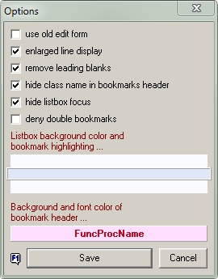

Editor BookmarksConfiguration (Options) |
|
The expert offers the possibility to configure the behavior and interface of the application. All settings are applied immediately after closing the window. 
The following settings are available: ▪You may activate the use of the old edit form, known from the previous version. Using this editing form you can freely select the module, line number and bookmark number on adding new bookmarks. ▪Normally, 3 lines of source code are displayed for each bookmark. A better representation of the position is achieved with a enlarged line display of 5 lines. ▪The display is also improved if the display removes leading spaces from the source code lines without destroying the structure of the code. If this option is not active, the text will be copied without any correction. ▪With hide class name .. the display of the function or procedure name can be optimized if the class name is particularly long and the header width is not wide enough to display both names. To ensure grouping, a dot is placed in front of each method identifier of a class method if the display of class name is deactivated. ▪The option hide listbox focus controls the focus display of the listbox. If this option is activated, no gray background is displayed for the selected item if the listbox does not have the focus. ▪The last option deny double bookmarks controls whether you can set double bookmarks in a single line. If enabled, the expert prevents the creation of duplicate bookmarks within a line. However, this is generally possible within the IDE (and in "Editor Bookmarks" Edit form). ▪In the lower part of the window the colors of the listbox background, the bookmarks line background and the background and font color of the header text can be changed: Double-clicking on the respective sample area opens the color selection dialog to select a new color. The custom colors of the color dialog can be used; they are saved (if dialog was exited via Ok) and restored by the expert. The application does not check the plausibility of your color selections - this must be ensured by the user. By right-clicking on the sample area, the selection can be reset to the default color specified by the application. ▪All changes are applied with the Save button or pressing Return; after that the window closes automatically. ▪With the Cancel button or pressing Escape you may close the window without changing any option. ▪You can access help by pressing the F1 key or by clicking on the F1 symbol in the statusbar.
|